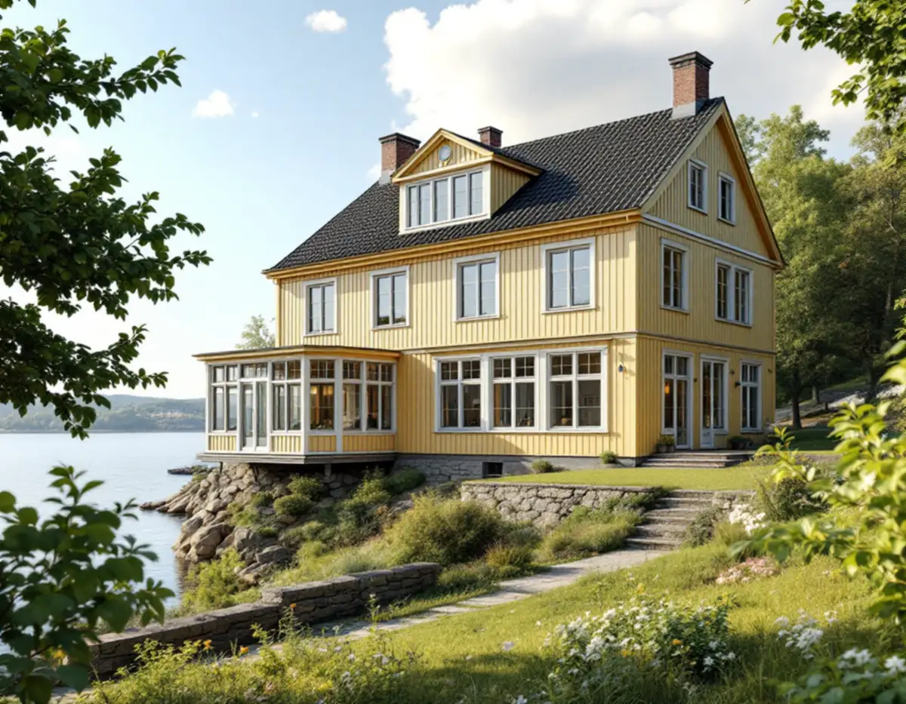
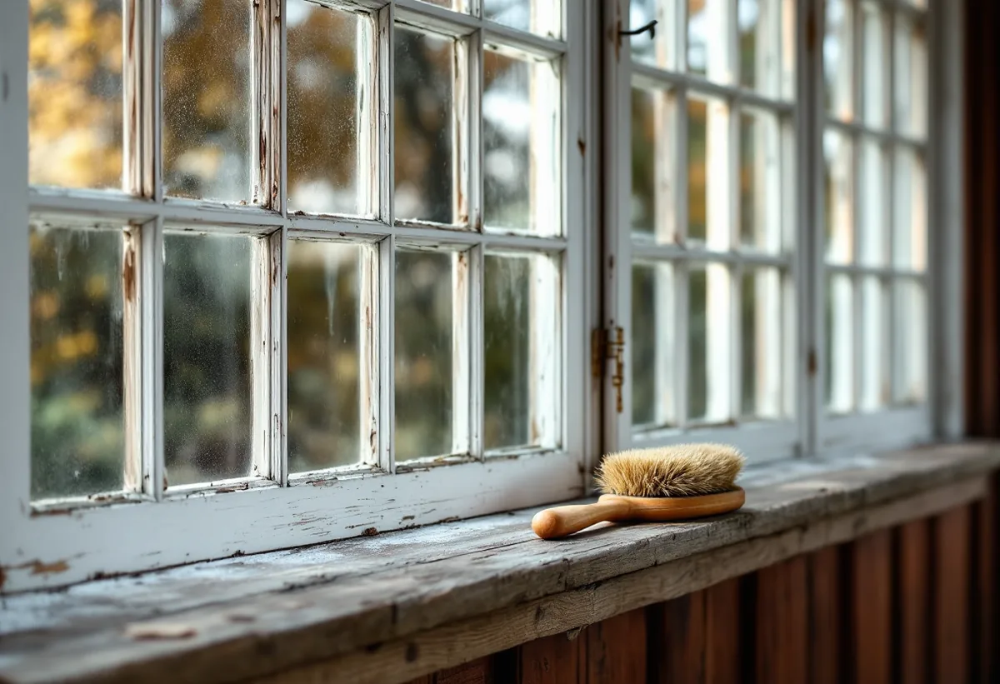

Platsbesök
Vi tittar på panel, verandor, fönster och uthus och tar reda på om det är oljefärg, rödfärg eller plastfärg som sitter på.
På Svinningehalvön står grosshandlarvillor från 1880- och 90-talen med panel som från början var målad med oljefärg, intill enkla röda stugor och villor från efterkrigstiden. Tre hustyper som behöver tre olika sorters färg. Geal Entreprenad AB målar fasader, verandor, fönster och interiörer i Åkersberga, Svinninge och övriga Österåker, med gratis platsbesök och skriftligt kostnadsförslag.

Kulturmiljöprogrammet för Svinninge, som Österåkers kommun tog fram 2008 inför detaljplanearbetet, beskriver sommarvillorna i Nantes och Svinningeudd som tvåvånings hus av resvirke med fasader av liggande fasspontpanel. Panelen har artikulerade våningsband och fönsteromfattningar, taksprånget skjuter ut, och programmet konstaterar att panelen ursprungligen var målad med oljefärg.
Riksantikvarieämbetet skriver att linoljefärg ända in på mitten av 1900-talet dominerade på trähus där rödfärg inte användes, och att den i dag mest används vid ommålning av tidigare oljefärgsmålade ytor. En rätt sammansatt och rätt struken linoljefärg har enligt handboken en livslängd på ungefär 15–20 år, men fönstersnickerier, vindskivor och sydfasader behöver målas om oftare.
Därför börjar vi med att ta reda på vad som sitter på panelen i dag. Har den fått plastfärg i en senare omgång blir valet ett annat än om oljefärgen finns kvar under smutsen. Boverket påpekar att ett byte från linoljefärg till plastfärg kan bedömas påverka husets karaktärsdrag.

Herrgårdsvillan med frontespis är den klart vanligaste villatypen i området, och programmet beskriver att många villor har en stor glasveranda mot sjön och att de uppglasade flyglarna är ett återkommande stildrag. Villa Johannesberg nämns som ett mycket välbevarat sommarnöje med torn, två flyglar med gästhus, ekonomibyggnad och badhus.
En glasveranda är målning i miniatyr: många smala spröjs, bågar och kittfalsar på liten yta. Handboken råder att skrapa upp även kittfalsarna, ta bort allt löst kitt och grunda de blottade falsarna innan de kittas om, och att också insidan av ytterbågen ska strykas med utomhusfärg. Det är ett tålamodsarbete som vi redovisar som egen post.
Linoljefärg ska strykas tunt, och handboken anger maj till augusti som bästa period, med trä som inte har högre fukthalt än ungefär 15 procent. Direkt solsken bör undvikas eftersom färgen kan få blåsor, så vi följer solen och målar de sidor som redan har haft sol. Mer om fönstren finns under fönsterbyte i Österåker.
Bredvid villorna byggdes enklare egnahem för familjer som bodde i området året runt och försörjde sig på sommargästerna. Programmet beskriver dem som enkla röda stugor med vita knutar från åren kring sekelskiftet. Efter sekelskiftet blev den röda stugan med vita knutar populär som byggnadstyp, och på 1930- och 40-talen tillkom sportstugor, en av dem med stående locklistpanel.
Rödfärgen behandlas helt annorlunda än oljefärgen på villorna. Ytan borstas ren från lös färg och lavar, rötskadat ändträ lagas och sedan stryks rödfärg på rödfärg. Kommer industritillverkad rödfärg till användning påpekar handboken att man ska se till att få samma kulör som tidigare, särskilt vid bättring. De vita knutarna och fönstren målas för sig med täckande färg.
På 1950- och 60-talen uppfördes enstaka villor för permanentboende som enligt programmet har hög arkitektonisk kvalitet, utformade som låga murade envåningshus med putsade eller murade fasader. Där är det fönster, dörrar och takfot som målas, och putsen bara om den har varit målad tidigare. Vill du läsa om taken i samma miljö finns takrenovering i Österåker.
Programmet påpekar att varsamhetskravet i plan- och bygglagen gäller för all bebyggelse i området, så att byggnadens särdrag beaktas vid ändringar. Delar av Nantes och Svinningeudd beskrivs som kommunens äldsta, bäst bevarade och samlade sommarbebyggelse.
På kommunens sida om kulturhistoriska byggnader står att du behöver söka bygglov om fastigheten ligger i ett kulturhistoriskt, särskilt värdefullt område eller om byggnaden är särskilt värdefull, till exempel om du vill ändra fasaden eller underhålla. Kommunen ber dig kontakta bygglovenheten innan arbetet börjar, och Österåkerskartan visar områden med kulturhistoriska värden.
Utanför sådana områden är ett kulörbyte på en villa normalt lovfritt sedan den 1 december 2025, enligt Boverket, och ommålning i samma kulör räknas som underhåll. Vi går igenom kartan med dig vid besöket. Läs mer om målning ute och inne på sidan om målare.
Vi tittar på panel, verandor, fönster och uthus och tar reda på om det är oljefärg, rödfärg eller plastfärg som sitter på.
Fastigheten kontrolleras i Österåkerskartan, och i värdefulla områden kontaktas bygglovenheten.
Färgtyp, kulör, förarbete och antal strykningar står med, och verandan redovisas för sig.
Tvätt, skrapning, ilagning av friskt trä och kittning av bågar och glasfalsar.
Tunna strykningar i torrt väder under säsongen, med de torktider färgen behöver.
Vi går igenom huset tillsammans och bättrar där det behövs.
För villor, radhus och fritidshus som du äger räknar Skatteverket fasadmålning och målning av fönster, väggar och tak som rotarbete. Målning av staket och murar ger inget avdrag. Avdraget är 30 procent av arbetskostnaden, högst 50 000 kr per person och år och högst 75 000 kr tillsammans med rutavdrag.
Färg, kitt och resor ger inget avdrag. Geal drar avdraget direkt på fakturan.
En sekelskiftesvilla med glasveranda, flyglar och mycket listverk tar betydligt längre tid än en röd stuga av samma storlek, och kuperade sjötomter kan påverka hur ställningen kan stå. Mängden lös färg och skadat trä avgör hur stort förarbetet blir. Platsbesöket är gratis och du får ett skriftligt kostnadsförslag.
Fasad, fönster och invändig målning.
Målare i Stockholm →Takbyte, takbesiktning och plåtarbeten.
Takläggare i Österåker →Svinninge, sommarvillor och sportstugor.
Takrenovering i Österåker →VA-utbyggnad, öar och vattensmarta val.
Badrumsrenovering i Österåker →Rivning, markarbete och gatukostnader.
Byggföretag i Österåker →Skärgårdshus, fritidshus och villor i Österåker.
Fasadrenovering i Österåker →Varsamhet, kulturvärden och kustlägen i Österåker.
Fönsterbyte i Österåker →Jämna golv och färre trösklar.
Golvläggare i Österåker →Bryggor, altaner och äldre snickerier.
Snickare i Österåker →Grannmedgivande, strandskydd och utstakning.
Tillbyggnad i Österåker →